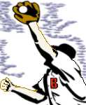
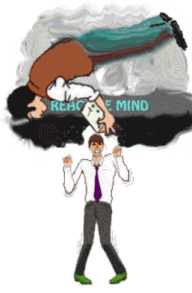
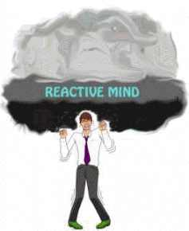

<html>

<head>
<meta http-equiv="Content-Language" content="en-us">
<meta http-equiv="Content-Type" content="text/html; charset=windows-1252">
<meta name="GENERATOR" content="Microsoft FrontPage 4.0">
<meta name="ProgId" content="FrontPage.Editor.Document">
<title>ST0 - TR's Theory and Drills: In depth data about each TR. Useful to clear up practical questions when drilling.</title>
</head>

<body background="../pictures/clearbirdbkg3.gif" leftmargin="30" bgcolor="#DFFFDF">

<b>


<div align="center">
  <center>
  <table border="0" cellpadding="8" cellspacing="0" width="100%" bgcolor="#FFDB48">
    <tr>
      <td width="7%" bgcolor="#FFFFFF">
        <p align="center"><a href="../index.htm" target="_top"><font size="3"></font></a></td>


  </b>
      <td width="93%" valign="middle" align="center" bordercolor="#FFCC99">
        <p align="center">
<font face="Tempo HeavyCondensed" color="#0000AA" size="4">TRs
        Instructions 3</font><font size="3" face="Ottawa" color="#0000AA">:</font>

<b>
<font size="3"><u><font face="Tempo HeavyCondensed" size="6" color="#0000AA"><br>
</font></u></font><b><u><font face="Tempo HeavyCondensed" color="#0000AA" size="6">TRs - Full Theory</font></u></b></td>
    </tr>
  </table>
  </center>
</div>


  </b>
<p align="left">&nbsp;</p>
<p align="left"><font face="Ottawa" size="3"><b>In this chapter we are going through each TR
in detail.</b> There are eight different drills, each with a specific purpose and
function. (They are OT TR-0, TR-0, TR-0 Bullbait, TR-1, TR-2, TR 21/2, TR-3,
TR-4).</font></p>
<p>&nbsp;</p>
<div align="center">
  <center>
  <table cellSpacing="1" border="0">
    <tbody>
      <tr>
        <td bgColor="#ffffff"><a href="904definitions.htm"><font size="3"></font></a></td>
        <td bgColor="#ffffff">
          <p align="center"><font size="3">&nbsp; OT TR-0 is <b>not</b> &nbsp;<br>
          meditation&nbsp;&nbsp;<br>
          &nbsp;&nbsp;&nbsp;&nbsp; but simply a drill&nbsp;&nbsp;&nbsp;&nbsp;&nbsp;<br>
          in being there as&nbsp;<br>
          potential cause.</font></p>
        </td>
      </tr>
    </tbody>
  </table>
  </center>
</div>
<p align="center">&nbsp;</p>
<b><u>
<p><font face="Ottawa" size="4">Name: <a name="abt OT TR-0">OT TR-0</a></font></p>
</u>
<p><font size="3"><font face="Ottawa">Theory:</font>  </font> </b><font face="Ottawa">This drill
undercuts the actual use of the communication formula. A person must be present
in order to start a communication; another must be present to receive it. On OT
TR-0 the student drills being present as potential Cause (Source-point) or
potential Effect (Receipt-point).</font></p>
<p><font size="3"><b><font face="Ottawa">Purpose: </font></b><font face="Ottawa">The student
has to comfortably confront another person. The student trains to simply <i>be</i>
in a position one meter (3 feet) in front of another person. He is present, and
relaxed and comfortable about it.</font></font></p>
<p><font size="3"><b><font face="Ottawa">Commands: </font></b><font face="Ottawa">None</font></font></p>
<b>
<p><font size="3"><font face="Ottawa">Position:</font>  </font> </b><font face="Ottawa">Student and
coach are sitting facing each other with eyes closed, about 1 meter (3 feet)
apart.</font></p>
<b>
<p><font face="Ottawa">Directions: </font></b><font face="Ottawa">This is a
silent drill. Student and coach sit across from each other with their eyes
closed.</font></p>
<p><font face="Ottawa" size="3">Student may not move around, confront with a body part,
or use any via to confront with. Sleepiness or drowsiness may not pass. This is
a simple drill. Anything added to simply being present is a flunk. The student
will usually see blackness when his eyes are closed.</font></p>
<p><font face="Ottawa" size="3">When the student can be present in a relaxed and alert
manner, and feeling good about it, he or she passes the drill.<br>
Note: Confronting is not part of this drill.</font></p>
<blockquote>
<p><font face="Ottawa" size="3"><i>Note:</i> Often this drill is done without coaching
and simply to a point where the student feels relaxed, alert and great about
being there. The instructor sometimes comes around and will give the coaching
instructions.</font></p>
</blockquote>
<b>
<p align="center">&nbsp;</p>
<div align="center">
  <center>
  <table cellSpacing="1" bgColor="#ffffff" border="0">
    <tbody>
      <tr>
        <td>
          <p align="center"><font size="3">&nbsp;&nbsp; TR-0: &quot;To confront the&nbsp;&nbsp;&nbsp;<br>
          pc with auditing only&nbsp;<br>
          or with nothing.&quot;&nbsp;</font></p>
        </td>
        <td><b><a href="904definitions.htm"><font size="3"></font></a></b></td>
      </tr>
    </tbody>
  </table>
  </center>
</div>
<u>
<p><font face="Ottawa" size="4">Name: <a name="abt TR-0">TR-0</a>, Confront</font></p>
</u>
<p><font face="Ottawa">Theory: </font></b><font face="Ottawa">In addition to
potential cause or effect, the following parts of the Comm Cycle are introduced:
Observation, Distance, Consideration, Attention, Confront.</font></p>
<b>
<p><font face="Ottawa">Purpose: </font></b><font face="Ottawa">To train a
student to confront a preclear with auditing only or with nothing. The idea is
simply to get the student able to hold a position one meter in front of a
preclear and to be relaxed and comfortable about it. He simply is supposed to be
present and not do anything except be present.</font></p>
<p><font size="3"><b><font face="Ottawa">Commands: </font></b><font face="Ottawa">None</font></font></p>
<b>
<p><font face="Ottawa">Position: </font></b><font face="Ottawa">Student and
coach are sitting facing each other about 1 meter (3 feet) apart.</font></p>
<b>
<p><font face="Ottawa">Directions: </font></b><font face="Ottawa">The student
and coach don't make any conversation or try to be interesting. They simply sit
and look at each other without saying or doing anything for some hours. Student
must not speak, blink nervously, move around or move, laugh or smile or be
embarrassed or get sleepy or drowsy. Often you will see the student confront
with a body part, like his face, nose, chest etc. rather than just sit and look
relaxedly at the coach. He can fall into using a system of confronting rather
than just BE present. Confronting means just that. You don't DO anything. The
whole action is to accustom an auditor to BEING PRESENT, 1 meter in front of a
preclear without apologizing or moving around or defending self. Confronting
with a body part can cause somatics in that body part. The solution is to just
carry on and confront and be present.<br>
The emphasis is first and foremost to get the student to confront the person
opposite him (the coach). Then later in the TR, coach can iron out physical
manifestations, twitches, blinks, etc.&nbsp;</font></p>
<p><font face="Ottawa" size="3">Student auditor passes when he can be present,
confronting, and has reached a major stable win on the subject.</font></p>
<p><font face="Ottawa" size="3">A full and final pass is granted when the student is able
to sit for a full two hours in one training session without any discomfort,
sleepiness etc. as listed above. Natural blinking allowed. Excessive (nervous)
blinking is not.<br>
&nbsp;&nbsp;</font></p>
<font size="4"><b><u>
<p>&nbsp;</p>
</u></b></font>
<div align="center">
  <center>
  <table cellSpacing="1" bgColor="#ffffff" border="0">
    <tbody>
      <tr>
        <td>
          <p align="center"><font size="3">TR-0 Bullbait:<br>
          &quot;The coach&nbsp;<br>
          may say or do<br>
          anything except&nbsp;<br>
          &nbsp; leave the chair.&quot;&nbsp;&nbsp;</font></p>
        </td>
        <b><u>
        <td><b><u><a href="904definitions.htm"><font size="3"></font></a></u></b></td>
        </tr>
        </tbody>
        </table>
      </center>
    </div>
  <font size="4">
    <p>&nbsp;</p>
  </font>
    <p><font face="Ottawa" size="4">Name: <a name="abt TR-0 BB">TR-0, B</a>ullbait</font></p>
  </u>
  <p><font face="Ottawa">Theory: </font></b><font face="Ottawa">Same as TR-0,
  unbullbatied. Emphasis on confronting <i>a preclear</i> who is being at cause.</font></p>
<b>
<p><font face="Ottawa">Purpose: </font></b><font face="Ottawa">The student is to
confront a preclear with auditing only or with nothing. The idea is simply to
get the student to be able to hold a position 1 meter in front of a preclear and
to be relaxed and comfortable about it. He simply has to <b>BE</b> present
without being thrown off, distracted or having any reactions to anything the
preclear says or does.<br>
<br>
Note: The purpose of TR-0 was just to get the guy to sit there and confront. But
the purpose of TR-0 Bullbait is to get the student able to <b>confront <i>a
preclear</i>.<br>
<br>
Commands: </b>Coach uses: &quot;Start,&quot; &quot;That's it,&quot;
&quot;flunk.&quot;<br>
<br>
<b>Position: </b>Student and coach sit facing each other about 1 meter (3 feet)
apart.<br>
<br>
<b>Directions: </b>After the student auditor has passed TR-0 and he can BE
present, it's time for &quot;Bullbaiting&quot;. Anything added to BEING THERE is
instantly flunked by the coach. Twitches, nervous blinks, sighs, moving around
or moving, anything except just being there is promptly flunked, with the reason
for the flunk.<br>
<u>To Coach:</u> Student laughs. Coach: &quot;Flunk! you laughed. Start.&quot;
This is all the coach is supposed to say as a coach.<br>
<u>To Student:</u> The coach may say anything or do anything except leave the
chair. The coach finds the student's &quot;buttons&quot; and works them over,
hard. No words (except coaching words) may cause any response. If the student
reacts, the coach is instantly a coach (see above). Student is given a pass when
he can BE present relaxedly without breaking up or becoming distracted or
reacting in any way to whatever the coach says or does, and has reached a major
stable win on the subject.<br>
</font></p>
<blockquote>
<p><font face="Ottawa" size="3">Button: Words, phrases, subjects or actions used by other
people, that cause a Bank reaction in an individual, resulting in discomfort,
embarrassment or upset, or in making him laugh uncontrollably.<br>
<br>
</font></p>
</blockquote>
<b>
<div align="center">
  <center>
  <table cellSpacing="1" bgColor="#ffffff" border="0">
    <tbody>
      <tr>
        <td><b><a href="904definitions.htm"><font size="3"></font></a></b></td>
        <td>
          <p align="center"><font size="3">&nbsp;&nbsp; TR-1. It has to be&nbsp;&nbsp;&nbsp;<br>
          delivered exactly&nbsp;<br>
          where the pc is,&nbsp;<br>
          but must also&nbsp;<br>
          be loud&nbsp;enough.</font></p>
        </td>
      </tr>
    </tbody>
  </table>
  </center>
</div>
<font size="4">
<p>&nbsp;</p>
</font>
<p><font face="Ottawa" size="4"><u><a name="abt TR-1">TR-1</a>, Deliver the Auditing Command</u></font></p>
</b>
<p><font face="Ottawa" size="3">The auditors TR-1 is done when he has delivered the
auditing command to his pc. He didn't deliver it out the window or over the
hills; no, he delivered it from exactly where he is to exactly where the pc is.
We run into salesmen and teachers that do a lot of communication every day. When
they first hear about the TRs and TR-1 they say: Oh, I know how to communicate.
That's part of what I do every day. But you observe them, you see them drop a
statement and nobody heard it. This is often what passes for communication:
throwing it out energetically but with no real idea of where it is supposed to
land.<br>
<br>
The American president Franklin D. Roosevelt (1933-45) was a great speaker on
the other hand. He never really talked to the nation. He talked to the
individual citizen. That's why he really communicated.<br>
<br>
There was another American president, Herbert Hoover (1929-33). He was
Roosevelt's predecessor. He spoke the most beautiful and correct English you
could imagine. No Oxford professor could find one little error in his grammar or
use of words or the way he pronounced them. It was perfect English. But when he
came with his perfect statements people wondered &quot;what is he talking
about?&quot; &quot;Is he talking about <i>our</i> problems to <i>us</i> that
way?&quot; Because of that he couldn't lead the nation. He couldn't lead the
nation out of the Depression (the 1930's economical 'hard times'). He had no
idea of talking to an individual or of getting his communication to land at its
intended target.<br>
<br>
Good speakers, a good lecturer, such as R. Hubbard, don't have the idea that
they are talking to a huge audience or the masses. They talk one-on-one to a lot
of people at the same time. In communicating with the audience, they speak to
each single individual in it, and each individual perceives that the speaker is
addressing her.<br>
<br>
If you want to address huge audiences and crowds it still starts with the
one-on-one communication you learn on TR-1. So it is not an unimportant step. It
is the doorway you have to get through if you want to learn to really
communicate to anyone.<br>
<br>
In TR-1 you sit opposite each other, student and coach. As a student your job is
simple. You get something across from you to your coach, so it arrives exactly
at her. That is what makes it a communication.<br>
<br>
If you have a very difficult student, one who doesn't seem to catch on to the TRs, and you have an eight weeks course to teach him, my advice would be: Let
him do TRs for the first seven weeks, teach him some auditing procedures in the
last week and then turn him loose. To try to teach him a lot of sophisticated
techniques when his TRs are not perfect is a waste of time. It would actually
be a disfavor to him and especially to his pc's.<br>
<br>
The TR step is not an easy one nor an unimportant one. It is the toughest step
towards becoming a good auditor. It may sound awfully simple: TR-1, you just
have to say something to a person with the full confidence that the person will
receive it. That is the whole trick.<br>
<br>
How exactly do we go about teaching this to a student? We give the student a
book to read from. You can use the book &quot;Jonathan Livingston Seagull&quot;
by Richard Bach. You can also use other books, like &quot;Alice in
Wonderland&quot;, as recommended by R. Hubbard.<br>
<br>
So the student takes the book and looks for a sentence. He finds a sentence: he
doesn't get into the story. He takes a random statement from the book in
quotation marks (&quot;&quot;). He leaves out &quot;He said&quot; or
&quot;Jonathan said&quot;. If he sees in the book: &quot;Why do they run so
fast?&quot; 'she asked' he uses &quot;Why do they run so fast?&quot;<br>
<br>
He picks a sentence out of the book. He does not pick a sentence from his head.
Why not? Because we are teaching him to take prepared statements and use that.
That's what he has to use in auditing. The first step is for him to pick
somebody else's idea and make it his own.<br>
<br>
Actually we do that all the time, when we use the language. The words are really
somebody else's ideas we have learned to use.<br>
<br>
In auditing you use carefully worded processes. They were first worded by R.
Hubbard and they were worked over by many auditors in the early days. Each
process now has a specific wording that is used exactly as stated. In the TRs we don't use actual processes, of course. Two phrases we use to drill processes
are: &quot;Do fish swim?&quot; or &quot;Do birds fly?&quot;. These are simple
questions and not therapeutic processes, of course. But it gets the student
familiar with the whole business of delivering a real process to a pc.<br>
<br>
There is nothing wrong with using others' ideas. There is no mass and no legal
rights to get you confused or in trouble.<br>
<br>
So you take an idea out of the book you are using in the drill. You make sure it
becomes your idea and you give it to the pc. That is really all there is to
TR-1.<br>
<br>
It is not from the book to the pc. The student auditor picks a sentence in the
book. He makes that sentence his own. The student auditor looks at his pc and he
delivers the sentence to the pc as if the idea just occurred to do so. The idea
has to arrive at where the pc is.<br>
<br>
You hear people talk to authors and speakers and say: &quot;I have some
questions about your ideas&quot;. You know right away, that such a person
doesn't communicate very well. He reveals that he can't take this first
important step of taking an idea and then communicating it to somebody else. He
is standing there one step behind real communication, because the first step he
would have to take is, to &quot;own&quot; these ideas and then to communicate.<br>
<br>
<b>Intention<br>
</b>Sometimes, when a pc first starts getting auditing, he will notice how
learned and deep the auditor seems to be, how he pronounces words, how he holds
his little finger while giving a command and so on. These things have nothing to
do with anything.<br>
<br>
It is the <i>intention</i> that communicates - not the words.<br>
<br>
When you have the intention to communicate to the pc and you succeed in getting
that intention across to the pc, then you really communicate! When you are good
at it you can even say it in Chinese or any other language the pc has no clue of
and the communication will still arrive loud and clear.<br>
<br>
There are specific drills (on ST level 1) that go into drilling intention as
separate from words. They are useful, but we don't need them just yet, as the
student has plenty to work with and learn.<br>
<br>
As far as TR-1 is concerned, we can say this: It is not the tone of voice that
is important; it is not the correct pronunciation that is important. It is
whether or not the student auditor can take a sentence out of a book; make it
his own; and then communicate it <i>as his own</i>. The intention must
communicate. And it must communicate in its own unit of time. What that means
is: it must be fresh and live each time. Let's say you use the question &quot;Do
fish swim?&quot; (as in TR-3). You sit there and you have given the question for
the 99th time. It must be the 99th time. Not just a robotic repeat of the first
time. That is what we mean by 'its own unit of time'. It's fresh. The previous
time is already history and forgotten.<br>
<br>
In TR-1, however, you use a variety of phrases that you pick from the book
'Jonathan Livingston Seagull' or some other book. Here is the exact drill:</font></p>
<b><u><font size="4">
<p>&nbsp;</p>
</font>
<p><font face="Ottawa" size="3">Name: TR-1, Auditing command</font></u></p>
<p><font face="Ottawa">Theory: </font></b><font face="Ottawa">Add to the theory
for TR-0 : student actually <i>being Cause,</i> with awareness of effect; he
gets a Message across a Distance to a Receipt-point.<br>
<br>
<b>Purpose:</b> to drill and perfect how to deliver an auditing command to a pc
(each command delivered fresh, in its own unit of time); and to deliver it
without flinch or strain, but naturally and directly as from auditor to pc.<br>
<br>
<b>Commands: </b>The student uses a book - such as 'Jonathan Livingston Seagull'
by Richard Bach. He takes sentences (omitting &quot;he said's&quot;), reads a
sentence to himself and then delivers it to the coach.<br>
<br>
<b>Position: </b>Student and coach sit facing each other about 1 meter (3 feet)
apart.<br>
<br>
<b>Directions: </b>the student picks a sentence from the book and makes it his
own. He says it to the coach in a natural way. It must not sound like he is
reading from a book. He is not trying to impersonate a character. He simply says
it as his own in a clear and straightforward manner.<br>
<br>
The coach must have received the command clearly and understood it before he
says &quot;Good.&quot;<br>
<br>
The coach controls the session. He says &quot;Start&quot;. He listens to the
student delivering the sentence. If he receives it clearly he says
&quot;Good&quot; and the student takes the next sentence. If she does not
receive the origination clearly or needs to correct something else, the coach
says &quot;Flunk,&quot; and tells the student why. The student repeats a flunked
origination. &quot;That's it&quot; is used to break off for a discussion or to
end the coaching session. The coach uses &quot;Start&quot; to resume the session
after a discussion and at the very beginning of the activity.<br>
<br>
TR-1 is passed when the student can put across an origination naturally and
relaxedly, yet clearly. He must do it without strain or flinching: no gestures,
no acting, no artificiality, nor public speaker manners. His voice sounds clear
and natural.<br>
<br>
<i>Note: </i>The Affinity level of the student is very important. All too often
an auditor whose TR-1 is out lacks affinity. He can't reach or be the other
person (coach or pc), so has difficulty communicating.<br>
<br>
</font></p>
<b>
<div align="center">
  <center>
  <table cellSpacing="1" bgColor="#ffffff" border="0">
    <tbody>
      <tr>
        <td><a href="904definitions.htm"><font size="3"></font></a></td>
        <td>
          <p align="center"><font size="3">TR-2. &quot;A method of&nbsp;<br>
          &nbsp;&nbsp; controlling pc's comm.&quot;&nbsp;&nbsp;&nbsp;</font></p>
        </td>
      </tr>
    </tbody>
  </table>
  </center>
</div>
<p align="center">&nbsp;</p>
<p><font face="Ottawa" size="4"><u><a name="abt TR-2">TR-2</a>, Acknowledgments</u></font></p>
</b>
<p><font face="Ottawa" size="3">Acknowledgment (Ack.) is the next part of the
communication cycle.</font></p>
<b>
<p><font face="Ottawa">Definition:</font></b><font face="Ottawa"><br>
<b>Acknowledgment (Ack.),</b> is what we say or do to inform another that we
have received, noted, and understood his statement or action.<br>
<br>
The perfect acknowledgment communicates only this: &quot;I have heard and
understood your communication&quot; - that's all there is to it. &quot;I have
heard what you said and I understand it.&quot; It signalizes that the preclear's
communication to you (or any person's comm, since it applies to life, not just
to auditing) has reached you.<br>
<br>
The whole stress of delivering an acknowledgment in TR-2 is, did it <i>arrive</i>
at the pc and <i>did he receive it?<br>
<br>
</i>Why is acknowledgment so important? Why is it important for an auditor to
become an expert at this? Well, the ack is a control factor. It is how you <i>control</i>
a pc's communication.<br>
<br>
Control is simply<i> Start, Change, Stop</i>. If you can start, change and stop
something, you can control it. The acknowledgment is the stop. It ends a
communication cycle.<br>
<br>
If you just said to a pc, &quot;Keep going&quot; or &quot;Keep talking&quot;,
that wouldn't be the acknowledgment we teach you here. The perfect
acknowledgment does not express agreement or consent. It simply expresses this,
&quot;I have heard what you said&quot;. &quot;Your communication has been
received and understood&quot;. That ends the cycle of action and the cycle of
communication. &quot;Your communication has been received and I have now decided
to stop that cycle and your communication is therefore under my control&quot;.
The things you can stop are things you can control, simply put. If you can't
control a pc's communication line you can't control the pc.<br>
<br>
Let's say you have a pc, a lady who is a little bit stressed. She has ailments
and odd pains and sensations and she hasn't had much to do in life except take
care of herself.<br>
<br>
When she first starts talking this lady will tend not to stop: &quot;I have
asked this specialist and gone and seen another one - and it cost money... by
the way - talking about money, I have had so many expenses lately, my daughter
asked....&quot;. She could just go on and on but it wouldn't do her any good.
The longer you let such persons talk the worse they will feel. They will talk
themselves straight down the tone scale and become more and more frantic. It's
an obsessive communication, an obsessive outflow you have in front of you.<br>
<br>
This is one instance where a skillful use of TR-2 comes in real handy. You look
at her and take real good aim. You are really putting intention into the ack and
make sure it arrives right where she is sitting and you say,<i>
&quot;Good!!&quot;</i> She will stop instantly and maybe even display a little
happy smile. She will instantly understand that you received her communication.
If you did this really expertly you are likely to get a response like this,
&quot;I don't think anybody has really listened to me before, isn't that
odd?&quot;<br>
<br>
Why do some people talk obsessively? They are trying to make up in quantity what
they lack in quality--listening. They are not sure they have an audience or even<i>
one</i> listener in the first place.<br>
<br>
When you acknowledge such a person really well they almost seem to come out of
an isolated state.<br>
<br>
The pc may say something like, &quot;Wow, I don't think I have ever talked to
anybody before!&quot; &quot;You are the first one who ever paid attention!&quot;<br>
<br>
One auditor (in the experimental days) had a pc who was an obsessive talker and
he just couldn't seem to get her to stop. Finally he moved his finger back and
forth just in front of her nose simply to get her attention. When he was sure he
had her attention for a brief moment he said, <i>&quot;Good! I heard
that!!&quot;</i> with full intention. The pc would stop and say, &quot;Wow, I
didn't realize until now that you were there and listening. Isn't that
strange?&quot;<br>
<br>
So a good acknowledgment can actually accomplish one important step in auditing:
that the pc <i>finds</i> the auditor. The auditor gets real enough to the pc so
a real communication can take place.<br>
<br>
Stopping a compulsively out-flowing pc is of course a specialized use of
acknowledgment.<br>
<br>
The general use is to end one communication cycle <i>with a full stop.</i> It
ends one little cycle. It started with you giving the command, the pc finding an
answer and giving it to you. In a moment you are going to give him the exact
same command once more but the thing is, that would drive him absolutely mad
unless it became perfectly clear to him that you actually <i>understood</i> what
he just said completely.<br>
<br>
So you acknowledge him with a &quot;Good&quot; or whatever is <i>appropriate</i>.
That ends that cycle.<br>
<br>
(If a pc just told you a sad tale of how his dog died, you would of course not
use &quot;Good&quot;. You have to show him, that you <i>understood</i> what he
said. Compassion is OK. Sympathy (0.9 on tone scale) is not. You could say
&quot;How terrible&quot;, &quot;I am sorry to hear that&quot;
compassionately--whatever would fit the situation and end the communication to
the pc's satisfaction that it was actually understood. You have to express
duplication and <i>understanding</i> to end the cycle.)<br>
<br>
You are going to use the same actual auditing command again. Now, the pc
understands that you have understood what he already said. So now it is fine
with him. He knows that the reason you ask the same question is that he has to <i>dive
deeper</i> into his Bank and find a completely new answer to the question. It's
a fresh beginning and the pc feels fine about that.<br>
<br>
<b>Drilling TR-2<br>
</b>Let's cover here how you actually do the drill in training. The coach reads
a line from a book like 'Jonathan Livingston Seagull' to the student. In this
drill we are not interested how well she does that. What's being drilled is how
the student acknowledges it. Also the coach is acting as the pc and pc's can say
it any way they want in a session. You don't 'discipline' pc's, you merely
control them, so this is the realistic way to do the drill.<br>
<br>
The coach reads a line from 'Jonathan' and the student acknowledges. At first
the coach just makes sure she can clearly hear the ack as to convince her of
that she was heard.<br>
<br>
At a later point she will be more specific and selective of what she considers a
good ack. Did the student really intend to finish the cycle? Or was he being
caught up in the fact that the coach was reading pieces of a longer story and he
seemed to want to hear the rest of it?<br>
<br>
&quot;Continue&quot; &quot;Go ahead&quot; are half-acknowledgments. They do have
their function in auditing, but that is part of TR 2 1/2 and not what we are
drilling here.<br>
<br>
So the student has to say &quot;Good&quot;, &quot;Fine&quot;, Okay, or anything
appropriate in such a way as to signal he has received and understood the
communication.<br>
<br>
TR-2 can have many good uses in life as well. You will find some examples in R.
Hubbard's book 'Dianetics&quot; 55!'<br>
<br>
There is the example with the traffic cop pulling a guy over for speeding and
ready to give him a ticket. If the driver is a real expert at TR-2 he will
simply acknowledge the policeman for having spoken to him so expertly that the
cop not only will forget his business at hand. No, he will get back into his
patrol car and drive down to the station and turn his in badge and retire!<br>
<br>
Acknowledgment is a powerful tool for the auditor. Learn to use it well and
expertly; that is what TR-2 is all about.<br>
<br>
Mood can be expressed with acknowledgment. Evaluation can also be expressed,
depending on tone of voice.<br>
<br>
There is nothing wrong with expressing an appropriate mood. You will see in
practice what does the job. Expressing compassion for the pc and her situation
can be done with a good acknowledgment. But, please notice, the Auditors Code
#9 says, 'Don't 'sympathize with the pc, but be effective&quot;. Sympathy is 0.9
on the tone scale, &quot;one individual going on to the wavelength of
another&quot;. For example, if one little child cries, the whole nursery will
soon be full of crying children. The purpose of TR-2 is to <i>control</i> the
pc's communication. You completely loose control if you would just sit there and
cry with your pc, of course. So you can, and often should, express some emotion
and <i>affinity</i> in your ack. But make sure you stay in control. You do not
express criticism, ridicule, or humor. That is invalidation. You don't express
evaluation either. All these things are against the Auditors Code; the coach
must catch and flunk them when she finds the student doing them.<br>
<br>
</font></p>
<b><u>
<p><font face="Ottawa" size="3">Name: TR-2, Acknowledgments</font></p>
</u>
<p><font face="Ottawa">Theory:</font></b><font face="Ottawa"> The student drills
switching from Effect to Cause. He receives, Understands and Duplicates the pc's
Answer (effect); then is cause in giving the Ack.</font></p>
<b>
<p><font face="Ottawa">Purpose: </font></b><font face="Ottawa">To teach the
student auditor that an acknowledgment is an important means of <i>controlling a
preclear's</i> communication in session. An acknowledgment is a <i>full stop</i>
that ends a communication cycle. The student must <i>understand</i> and<i>
appropriately </i>acknowledge in order to end the comm.<br>
<br>
<b>Commands: </b>The coach reads a line from a book - like 'Jonathan Livingston
Seagull'. He omits &quot;He said's,&quot; and the student has to thoroughly
acknowledge each origination. The coach repeats any line he feels the student
did not truly acknowledge. The student can use &quot;Good&quot;,
&quot;Fine&quot;, &quot;OK&quot;, &quot;I heard that&quot; and anything that is <i>appropriate</i>
to pc's statement. It has to convince the pc or coach that he was heard and <i>understood.
</i>The coach will repeat any statement he feels the student did not correctly
ack.<br>
<br>
<b>Position: </b>Student and coach are sitting facing each other about 1 meter
(3 feet) apart.<br>
<br>
<b>Directions: </b>The student is to acknowledge exactly what was said so the
coach knows it was heard. Ask student from time to time, What did I say?&quot;.
Let the student do anything at first to get his acknowledgment across and then
start to straighten him out. Teach him that an acknowledgment is a <i>stop</i>,
an end of cycle - not the beginning of a new comm cycle or an encouragement to
the pc to go on. Teach the student further that an ack is not a robotic thing.
It has to express understanding of what was said. Even &quot;That's
terrible&quot; can be appropriate if pc is telling a dreadful story. Reality is
thus important in TR-2.<br>
Teach him further that one can fail to get an acknowledgment across, or can fail
to stop a pc with an acknowledgment, or can acknowledge too strongly--which can
totally throw the pc out of session.<br>
<br>
The coach says &quot;Start,&quot; reads a line and says &quot;Flunk&quot; when
the coach feels there has been an improper acknowledgment. The coach repeats the
same line each time the coach says &quot;Flunk.&quot; Use &quot;That's it&quot;
to break off for a discussion or end the coaching session. &quot;Start&quot;
begins a new coaching after a &quot;That's it.&quot;<br>
</font></p>
<p align="center">&nbsp;</p>
<div align="center">
  <center>
  <table cellSpacing="1" bgColor="#ffffff" border="0">
    <tbody>
      <tr>
        <td><a href="904definitions.htm"><font size="3"></font></a></td>
        <td>
          <p align="center"><font size="3">&nbsp;&nbsp; Half Acks keep&nbsp;&nbsp;&nbsp;<br>
          a person talking&nbsp;<br>
          on the subject.</font></p>
        </td>
      </tr>
    </tbody>
  </table>
  </center>
</div>
<b><u>
<p><font face="Ottawa" size="4">Name: <a name="abt TR-2 1/2">TR-2 1/2</a>, Half-Ack</font></p>
</u>
<p><font face="Ottawa">Theory: </font></b><font face="Ottawa">The same as on
TR-2. But the emphasis here is on drilling Acks and Control in such a way as to
bring about the &quot;Continue&quot; (or &quot;change&quot;) part of the Control
cycle.<br>
<br>
<b>Purpose: </b>To teach the student that a half-ack is how you encourage a pc
to <i>keep talking </i>about something.<br>
<br>
<b>Commands: </b>The coach reads a line from a book - like 'Jonathan Livingston
Seagull'. He omits &quot;He said's&quot; and the student has to half-ack each.
The coach repeats any line he feels was not half acked.<br>
<br>
<b>Position: </b>Student and coach sit facing each other about 1 meter (3 feet)
apart.<br>
<br>
<b>Directions: </b>The student is to give a half ack as an encouragement to the
pc to <i>continue talking</i>. Correct over-acknowledgment that stops a pc from
talking. Drill student on how half ack is a way of keeping a pc talking by
giving the pc the feeling that he is being listened to with interest.<br>
<br>
The coach says &quot;Start,&quot; reads a line and says &quot;Flunk&quot; when
she feels there has been an improper half ack. The coach repeats the same line
each time the coach says &quot;Flunk.&quot; Use &quot;That's it&quot; to break
off for discussion or end the activity. If the coach used 'That's it' before
discussing something, he must say &quot;Start&quot; again before coaching
resumes.<br>
<br>
</font></p>
<div align="center">
  <center>
  <table cellSpacing="1" bgColor="#ffffff" border="0">
    <tbody>
      <tr>
        <td bgColor="#ffffff"><b><a href="904definitions.htm"><font face="Ottawa" size="3"></font></a></b></td>
        <td bgColor="#ffffff">
          <p align="center"><font size="3">&nbsp; TR-3. The auditor has to &nbsp;<br>
          be able to use the same&nbsp;<br>
          question as though&nbsp;<br>
          it had never&nbsp;occurred&nbsp;<br>
          to anyone before.&nbsp;</font></p>
        </td>
      </tr>
    </tbody>
  </table>
  </center>
</div>
<b>
<p>&nbsp;</p>
<p><font face="Ottawa" size="4"><u><a name="abt TR-3">TR-3</a>, Duplicative Question</u></font></p>
</b>
<p><font face="Ottawa" size="3">TR-3 is interesting because it makes auditors duplicate
(in the sense to make an exact copy over and over).<br>
<br>
R. Hubbard found in teaching others how to audit (1950), that some auditors
would vary their auditing question all the time &quot;to stay interesting&quot;.
Their pc's would experience a little unpleasant shock each time they received a
new version of the command.<br>
<br>
If an auditor like that was to run a simple repetitive process like &quot;Do
fish swim?&quot;, they would start out &quot;Do fish swim?&quot; Next time
around they would say, &quot;Do finny creatures move in water?&quot; and next
time, &quot;Do scaled animals take off when they bathe?&quot; and &quot;Do
herrings and other scaled animals go from point A to point B under water?&quot;
It would cause the pc not to know what to expect next and become uneasy or
upset.<br>
<br>
In TR-3 the auditor says &quot;Do fish swim?&quot; and just to do something new,
he would then say &quot;Do fish swim?&quot; Next time around he will for good
measure say &quot;Do fish swim?&quot; and he will keep it up for as long as it
takes, for another two hundred times if needed.<br>
<br>
As we learned on TR-1 it is important that each auditing command is given in its
own unit of time. This is extremely important to understand and follow when we
come to TR-2, Duplicative Question. Because when you are saying &quot;Do fish
swim?&quot; and you have done it a hundred times just before that, it is still a
brand new question the 101st time. No auditing command should depend for its
meaning on an earlier command. Not on any earlier auditing command ever given.
Each command, in theory, exists purely in its own unit of time, in present time
and with its own live and fresh intention.<br>
<br>
On ST Level One, you will learn to run the so-called Objective processes. These
are apparently simple physical processes, but when done right they are amazingly
effective. In the process 'CCH 1' you say &quot;Give me that hand&quot; and you
run that as a repetitive process. But unless you master giving the command with
intention and in its own unit of time the process won't do much good. Some
auditors, poorly trained, will blur the commands and cycles &quot;give me that
hand...thank you...give me that hand...thank you...give me that hand...thank
you...&quot; They will just robotically repeat themselves and blur it all
together. Run this way, the process looses its therapeutic value completely. No
gains for the pc. Why? Because the auditor has just set up a machine that
repeats the command over and over. You probably know the feeling from voice mail
and other recorded messages. Often, there is no intention.<br>
<br>
If you told somebody to give you his hand with enough intention the body would
respond instantly by extending the hand. Let's say you gave the command in a
language the pc didn't understand. You would still get instant compliance from
the body, because the body does not obey words but intention.<br>
<br>
Therefore when you use a repetitive command, as here on TR-3, and use the same
wording over and over, you must realize that the words are not as important as
they may first seem. It is expressing <i>with</i> <i>intention and in its own
unit of time</i>, that makes it bite. You express it each time in present time
as itself and with intention.<br>
<br>
People sometimes wonder how you as an auditor can actually stand giving a
repetitive command sometimes for hours on end. &quot;Nobody can sit there all
day long and repeat himself without going nuts&quot;. The trick is to do it in
present time as a live communication. When you really get it you can do it all
day long and all year long and actually get more and more enthusiastic about it.
If you do it by means of a mental machine you had set up, communication would be
impossible.<br>
<br>
Communication is achieved by control and duplication. At first you may want to
make each statement of the command with a slightly different tone of voice, just
to remind yourself that is a new unit of time. This is OK, but as you become
better and better you will actually find that this isn't necessary. You can use
pretty much the same tone of voice and still make it new each time.<br>
<br>
It is absolutely incorrect to try to teach auditors to use the same tone of
voice each time or a different one for that matter. Because you don't want any
auditing command to depend on an earlier one given, ever. All your attention and
the intention you form is in present time, you see. You couldn't care less about
what took place a few seconds ago. Your intention is to ask the question and get
an answer. One command per unit of time. You ask &quot;Do fish swim?&quot; and
after the answer you get this bright idea, &quot;Do fish swim?&quot; and
suddenly it occurs to you that you could ask the pc, &quot;Do fish swim?&quot;<br>
<br>
In this drill we actually learn a lot about the duplicative factors in
communication.<br>
<br>
You may think that the fact that we are repeating would mean we would loose some
of the communication. It may seem absolutely impossible to ask the same question
over and over again and actually maintain ARC and interest. &quot;How can you
keep being interesting to the pc when you say 'Do fish swim? over and
over?&quot; someone may ask. Although &quot;being interesting&quot; <i>is</i>
part of communication it is the least important part to the auditor. He is not
there to be &quot;interesting&quot; to the pc or to entertain him or keep up a
social conversation.<br>
<br>
If you were to just place two people facing each other, they would immediately
feel a compulsion to be interesting to each other. But that is not auditing;
that is being social and interesting.<br>
<br>
If a student had difficulties in doing this TR, it would be perfectly OK for the
instructor, to put the student back on TR-0. There are different levels of being
interesting on the TRs but when you come to TR-3 you should actually have no <i>compulsions</i>
to be interesting. The student will probably be found to have difficulties just
sitting in a chair and facing another human being. So put him back on TR-0 and
make sure he can do it for an hour or two. When he comes back to TR-3 he will do
much better.<br>
<br>
It is absolutely necessary for an auditor to be able to duplicate the auditing
question or command. But as he drills, he rises above mere duplication. Is he
really <i>duplicating</i>? No! It is only apparent duplicating because he does
each cycle of communication newly <i>in present time</i>.<br>
</font></p>
<b>
<p><font face="Ottawa">Experience and Duplication<br>
</font></b><font face="Ottawa">The lesson of one's experience seems to be:
&quot;I'll never do that again!&quot;. You had to promise your father 'never to
do that again', when you had done something bad. He wanted you to learn from
experience. He hoped that the big cigar would make you so sick you'd go off the
entire idea of smoking. So this is one thing experience seems to teach us: never
to do it again.</font></p>
<p><font face="Ottawa" size="3">Experience by itself is of course not painful, although
people with bad experiences seem to think so.</font></p>
<p><font face="Ottawa" size="3">But you know this common decision of 'Never to do that
again' is a decision not to duplicate, and after a few decisions like that one
can't communicate either because communication requires duplication.</font></p>
<p><font face="Ottawa" size="3">When somebody has decided he'd 'better not duplicate',
followed by 'better not communicate,' bad phenomena occur. One moment becomes
identified with all moments because the being is no longer present with each
moment. One's very Reactive Bank jams up and causes one trouble.<br>
<br>
As a student of the TRs, and here TR-3, you are required to do the duplicative
action of repeating the question &quot;Do fish swim?&quot;, uttering the
question in the present, each time. Doing a duplicative action in training has a
tendency to undo a lot of the burden that bad experiences have loaded on your
shoulders. It unjams your 'one moment is all moments' business.</font></p>
<p><font face="Ottawa" size="3">You should also realize that this TR helps you overcome
the 'Never do it again' that you have been teaching yourself for countless
millennia. Your experience has been teaching you, trauma by trauma, not to live.</font></p>
<p><font face="Ottawa" size="3">While the focus of the course is to train auditors,
students find in mastering the TRs that their new abilities affect ALL of their
lives, radically. The greater and happier the changes in life, the more certain
we are that the student has really learnt his or her TRs</font></p>
<p><font face="Ottawa" size="3">There is one little simple drill the instructor can use
with students who have difficulties with 'Duplicative commands'.</font></p>
<p><font face="Ottawa" size="3">Have the student touch the wall five times and make him
distinguish one of the touches from the rest. This can have some good benefits
for the student. Soon he will be able to tell all 5 touches apart, and then go
on to do TR-3 successfully.</font></p>
<p>&nbsp;</p>
<p><font face="Ottawa" size="3"><b>Q &amp; A and TR-3<br>
</b>R. Hubbard gave several definitions on Q and A. In HCOB 5 April, 1980, he
specified what Q and A in TRs specifically is. In general it can mean
'indecisive; incapable of making up one's mind.'<br>
As it applies to TRs it means: The question asked proceeded from the last
answer.</font></p>
<p><font face="Ottawa" size="3">Example:<br>
Question: How are you?<br>
Answer: I'm fine.<br>
Question: How fine?<br>
Answer: My chest hurts.<br>
Question: When did your chest begin hurting?<br>
Answer: About seven.<br>
Question: Where were you at seven? -etc., etc.</font></p>
<p align="justify"><font face="Ottawa" size="3">The above is a terrible auditing fault.
As each question is based on the last answer, it is called &quot;Q and A.&quot;
It could also be called &quot;Q based on last A.&quot;</font></p>
<p align="justify"><font face="Ottawa" size="3">Q and A never completes any cycle. It
confuses pc's so they get lost. It violates TR-3.</font></p>
<p align="justify">&nbsp;</p>
<p align="justify"><font face="Ottawa" size="3"><u>The actual drill:</u></font></p>
<p><b><u><font face="Ottawa" size="3">Name: TR-3, Duplicative Question</font></u></p>
</b>
<p><font face="Ottawa" size="3"><b>Theory:</b> The student is using all the parts of the
comm cycle in this drill. He has to complete a communication and to duplicate it
over and over in present time.<br>
</font></p>
<b>
<p><font face="Ottawa">Purpose:</font></b><font face="Ottawa"> To teach a
student auditor to duplicate an auditing question without any variation (of
words), each time newly, in its own unit of time, and to acknowledge it.<i><br>
Also: </i>To teach that as an auditor you never ask a second question until you
have received an answer to the one asked.</font></p>
<b>
<p><font face="Ottawa">Commands:</font></b><font face="Ottawa"> &quot;Do fish
swim?&quot; or &quot;Do birds fly?&quot;</font></p>
<b>
<p><font face="Ottawa">Position:</font></b><font face="Ottawa"> Student and
coach are sitting facing each other about 1 meter (3 feet) apart at.</font></p>
<b>
<p><font face="Ottawa">Directions:</font></b><font face="Ottawa"> One question
and student's ack of its answer is in one unit of time that is then finished.
Keep auditor from straying into variations of the question. Even though the same
question is asked, it is asked as though it is a brand new idea - and never as a
blur with the previous cycles (robotic repeat).</font></p>
<p><font face="Ottawa" size="3">The student auditor must learn to give a command and
receive an answer and to acknowledge it in one distinct unit of time.</font></p>
<p><font face="Ottawa" size="3">The student auditor is flunked if he fails to get an
answer to the question asked, if he fails to repeat the exact question, if he Q
and As with a diversion offered by the coach.</font></p>
<p><font face="Ottawa" size="3">The coach uses &quot;Start&quot; and &quot;That's
it,&quot; as in earlier TRs. The coach is not bound after giving the 'Start' to
answer the auditor's question. He may hesitate (comm lag) or give wild comments
off the subject, as a way to bullbait the student. The coach answers the
question directly, often, and throws in his comments, etc., randomly, to try to
catch the student off guard</font></p>
<p><font face="Ottawa" size="3">Somewhat less often the coach attempts to get the student
auditor into a Q and A or upset him.</font></p>
<p><font face="Ottawa" size="3"><u>Example:</u><br>
Student Auditor: &quot;Do fish swim?&quot;<br>
Coach: &quot;Yes.&quot;<br>
Student Auditor: &quot;Good.&quot;<br>
Student Auditor: &quot;Do fish swim?&quot;<br>
Coach: &quot;Aren't you getting tired of this?&quot;<br>
Student Auditor: &quot;Yes.&quot;<br>
Coach: &quot;Flunk.&quot;</font></p>
<p><font face="Ottawa" size="3">When the student doesn't get an answer, he repeats the
question. The auditor must say, gently, &quot;I'll repeat the auditing
question&quot; (this is called &#24;the repeat statement&#25;), and continue to
do so until he gets an answer.<br>
<br>
Anything except commands, acks and, as needed, the repeat statement, is flunked.
Unnecessary use of the repeat statement is flunked. A poor command is flunked.
An improper ack is flunked. Q and A is flunked (as in the example). Student's
misemotion and confusion is flunked. Student's long hesitation (comm lag) is
flunked. A premature acknowledgment is flunked.<br>
Lack of ack (or with a distinct comm lag) is flunked. Any words from the coach
except an answer to the question, &quot;Start,&quot; &quot;Flunk&quot;,
&quot;Good&quot; or &quot;That's it&quot; should have no influence on the
auditor. He keeps giving the repeat statement and the question until it is
answered.<br>
<br>
&quot;Start,&quot; &quot;Flunk,&quot; &quot;Good&quot; and &quot;That's it&quot;
may not be used to bullbait the student auditor. Any other statement can be.<br>
<br>
The coach may try to leave his chair in this TR. If the student allows it, it is
a flunk. (The student may use his hands to prevent the coach from leaving the
chair). The coach should not use personal or case-related statements such as
&quot;I just had a cognition&quot; (that's TR-4). Coach's statements should
concern the student with the intent to throw the student off and cause him to
lose session control or lose track of what he's doing.<br>
<br>
The student's job is to keep the session going despite anything; he uses only
the command, the repeat statement, and the ack (and hands as mentioned above).
If the student does anything other than these, the coach flunks him and tells
him the reason why.</font></p>
<p>&nbsp;</p>
<div align="center">
  <center>
  <table cellSpacing="1" border="0">
    <tbody>
      <tr>
        <td bgColor="#ffffff"><b><a href="904definitions.htm"><font face="Ottawa" size="3"></font></a></b></td>
      </center>
      <td bgColor="#ffffff">
        <p align="center"><font size="3">TR-4. Suddenly the pc says&nbsp;<br>
        something that is completely&nbsp;<br>
        off the subject, but important&nbsp;<br>
        to her. She is at Cause,&nbsp;<br>
        &nbsp; unexpectedly. The auditor has&nbsp;&nbsp;<br>
        to recognize that and&nbsp;<br>
        handle it smoothly.</font></p>
      </td>
    </tr>
  </tbody>
  </table>
</div>
<b>
<p>&nbsp;</p>
<p><font face="Ottawa" size="4"><u><a name="abt TR-4">TR-4</a>, Handling Preclear
Originations</u></font></p>
<i>
<p><font face="Ottawa">Origination, in auditing: </font></i></b><i><font face="Ottawa">A
remark or statement from the pc, that concerns his ideas, reactions or
difficulties. It often comes unexpectedly. It is something he says, that is
important to him, but isn't an answer to the auditor's question.<br>
It is different from a <b>comment, </b>which is defined as an attempt to
distract auditor or an attempt to blow session.</font></p>
</i>
<p><font face="Ottawa" size="3">This drill is about handling a pc's originations. You
always handle a pc's originations on ST level 0.</font></p>
<p><font face="Ottawa" size="3">There are certain physical processes on ST level 1 on
which&nbsp; you don't handle originations. They have to do with control and
'positive postulating' (Tone 40). But in normal auditing you always handle a
pc's originations.</font></p>
<p><font face="Ottawa" size="3">What do we mean by origination or origin? It is something
the pc volunteers, something he brings up all on his own, in the session. It is
actually a very good indicator of the pc making progress. Does the pc originate
or volunteer anything of his own? The auditor uses this as an indicator of that
the pc is getting better and stronger. He could say,<br>
&quot;This pc isn't getting any better. He hasn't come up with anything of his<br>
own yet&quot;.<br>
<br>
So it is a sign of the pc doing well and becoming more self-determined that he
from time to time originates something on his own. He can be at the cause point
of the communication formula.</font></p>
<p><font face="Ottawa" size="3">As increasing the pc's cause level is one of the overall
goals of auditing originations should be encouraged and welcomed.<br>
</font></p>
<p><font face="Ottawa" size="3">Much of the value of the TRs and the auditing comm cycle
is that they show the pc that his communication and his Bank can be controlled.
As he learns this he will gradually gain more control over his mind and life. He
will say, &quot;Wonderful; this can be controlled and that can be controlled. I
think I will go on doing that&quot;. So the auditor is to some extent
controlling the pc's possessions, his body and mind, until the pc discovers that
control is possible and decides to control on his own.</font></p>
<p><font face="Ottawa" size="3">Most pc's don't originate early on. You will see pc's
that apparently originate. You have compulsive talkers (as discussed under
TR-2). You will see odd Bank manifestations that appear to be originations.<br>
</font></p>
<p><font face="Ottawa" size="3">When a pc plays out the content of the Reactive Mind it
is called a dramatization. He plays out the content as if he were an actor and
he plays it out in an odd way, because he really isn't aware of what is going
on.<br>
This is a dramatization. So as an auditor you can observe odd phenomena and
behavior and think it comes from the pc; that it is the thetan's (pc's)
origination. But as you gain experience in auditing, you will see that some
originations come from the pc - from the thetan that is - but also some from his
Bank, with the pc (the thetan) having no real part in them.<br>
</font></p>
<p><font face="Ottawa" size="3">So a true or ideal origination is not about the content
of the pc's Bank being played out. It is something where the pc (thetan) is
cause. A cognition is one good example of that. There are sincere questions and
other situations as well, of course. This is just to give you an idea of what is
really going on. If the pc says something and it apparently is an origination,
you would of course handle it as such. So you are not there to try to judge or
challenge every 'apparent origination' of the pc. That would be evaluation and
against the Auditors Code. But knowing about the Bank and dramatizations is
sometimes useful in determining how far to take some statements.</font></p>
<p><font face="Ottawa" size="3">In any type of auditing (except tone 40 processes) you
must handle well and conclusively any pc origination. Failure to handle an
origination correctly leaves the pc hung up with that origination.</font></p>
<p><font face="Ottawa" size="3">If the pc had something astonishing happening to him and
communicates it, but the auditor fails to listen to or understand it, you can
see the pc 'resign to the process' and go into apathy about the situation. He
will go right out of session (in-session is: interested in own case and willing
to talk to the auditor), due to the auditor's inability to handle<br>
originations correctly.<br>
</font></p>
<p><font face="Ottawa" size="3">In order to run a session, the auditor has to be very
alert to originations the pc comes with and even invite them out into the open.
He must be prepared to handle the most alarming and surprising things as pc's
can and do originate anything under the sun.</font></p>
<p><font face="Ottawa" size="3">Almost by definition, originations are unexpected. The
unexpectedness should actually be part of the definition, because they are often
off the subject. They can take you&nbsp; by surprise.</font></p>
<p><font face="Ottawa" size="3">It could be, &quot;It feels like my chest is on
fire&quot;, or &quot;I think I am 5 feet above my body just now&quot;. You need
to understand the pc and handle such statements. He needs to feel understood and
you need to stay in control and not getting lost. The untrained is embarrassed,
surprised, or amused by such statements. You have to operate from the definition
of<i> pc being 'in-session': Pc interested in his own case and willing to talk
to the auditor. </i>If you operate otherwise, if you don't handle originations
expertly, you put your pc in apathy and he is certainly not in-session.</font></p>
<p>&nbsp;</p>
<p><font size="3"><b><font face="Ottawa">Handling <a name="Originations in Life">Originations
in Life</a><br>
</font></b><font face="Ottawa">How does this data about handling originations
play out in every day life?</font></font></p>
<p><font size="3"><font face="Ottawa">Have you ever been in a heated argument or been the
witness to one?</font> <font face="Ottawa">I am sure you have. Chances are that
it got so bitter, so heated, because one or both of the parties completely
ignored the other person's originations.</font></font></p>
<p><font size="3"><font face="Ottawa">Often an argument or a blow-up follows after an ignored
origination.</font> <font face="Ottawa">Try to trace back a few times you got
into a fight and see if you can't find the ignored communication or origination
at the bottom of it.</font></font></p>
<p><font face="Ottawa" size="3">You have somebody come to you and say: &quot;I have just
passed my final exam with flying colors!&quot;. Let's say your 'answer' or
response is &quot;Shouldn't we watch the game&nbsp; that is on now?&quot;. He
will probably get furious with you. He feels ignored. He may leave very upset or
might spend all afternoon contradicting anything you say so as to even the
score.</font></p>
<p><font face="Ottawa" size="3">Small children that misbehave mysteriously are usually
subject to this kind of unknowing abuse. Parents used to have strange ideas
about 'children should be seen and not heard'. Or, since the child can't really
express herself in complete or correct sentences then she doesn't have an
opinion.<br>
The truth is that even small children can be very sharp observers and can have a
distinct opinion about things, but simply lack the language skills to express
themselves and be understood. So the parents don't take them seriously. Small
children certainly have the desire to express themselves and want their adults
to understand what they communicate.<br>
</font></p>
<p><font face="Ottawa" size="3">The smart thing to do, whether you understand them or
not, is to pay close attention and acknowledge their communication.</font></p>
<p><font face="Ottawa" size="3">There is actually a variation of TR-3/TR-4 called
&quot;Mutter TR&quot; that drills this. The coach will mumble something
incomprehensible and the student simply acknowledges, whether he understands it
or not. That is pretty much all there is to it. Mutter
TR as a Drill is listed on ST1. It is used in drilling repetitive style
auditing.</font></p>
<p><font face="Ottawa" size="3">Parents with misbehaving children should learn an
important lesson here. It has happened time and again that parents came for
advice about their children's bad behavior. The first and simplest advice we
give them is first to check out how they handled their children's originations.
If they didn't listen and acknowledge what little Robert or little Angela said
we help them to radically change their relationship on the spot. &quot;You have
to listen and you have to acknowledge&quot; was the advice we gave them.</font></p>
<p><font face="Ottawa" size="3">After practicing this for a week they usually come back
and rave about how well-behaved and happy their problem child suddenly have
become.</font></p>
<b>
<p><font face="Ottawa">About the Drill and Auditing<br>
</font></b><font face="Ottawa">Handling an origination is merely saying
&quot;All right, I heard it, you are there.&quot; You could say it is a form of
acknowledgment, but it is really a little different.</font></p>
<p><font face="Ottawa" size="3">For the auditor, It is the communication formula in
reverse. <i>The pc is at cause point.</i> But the auditor is still in control if
he handles the origination; if not, the comm formula goes out of his control and
he becomes effect point and he looses session control. In other words the
handling of origins has a great deal of practical use.</font></p>
<p><font face="Ottawa" size="3">There are three major steps to handling an origin. Let's
take an example:<br>
The pc is sitting across from the auditor and the auditor is running the
process, &quot;Do fish swim?&quot; or &quot;Do birds fly?&quot;<br>
<br>
Auditor, &quot;Do birds fly?&quot;<br>
Pc, &quot;Yes&quot;.<br>
Auditor, 'Thank you&quot;.&nbsp; &quot;Do birds fly?&quot;<br>
Pc doesn't answer.<br>
Auditor, &quot;Do birds fly?&quot;<br>
Pc, &quot;I think you hair is on fire,&quot; or &quot;I am five feet above my
body&quot;, or &quot;Is it true, that all thetans are ghosts?&quot;.</font></p>
<p><font face="Ottawa" size="3">As you see, the response is not an answer to the
question. It has nothing to do with &quot;Do birds fly?&quot;.<br>
So where did it come from? It may very well come from pc's Bank, but it is an
origin all the same. How do you handle it?<br>
<br>
You want the pc to stay 'in-session', and he wouldn't do that if you handled it
wrongly.<br>
<br>
So you do these three steps:</font></p>
<p><font face="Ottawa" size="3">(1) You answer it; (2) you maintain ARC (you do not have
to spend a lot of time on it, but you do have to maintain ARC); and (3) you get
the pc back on the process. It can be really short. If you spend too much time
on (2) you are not doing it right.</font></p>
<p><font face="Ottawa" size="3">What is an origin? It could be the pc saying, &quot;I'm
five feet above my head.&quot;</font></p>
<p><font face="Ottawa" size="3">What are you supposed to do with such a statement?<br>
You simply start with (1) You answer it. You could say, &quot;You are?&quot;.
You let the pc know you heard it. That it made an effect upon you. Now you do
(2), Maintain ARC. That is usually the one you need to pay the least attention
to, but you just have to keep an eye on that ARC is maintained. If the ARC
should go out, you see, it would be deadly. Often you can go onto (3), get him
back on the process.</font></p>
<p><font face="Ottawa" size="3">But you will have to develop a little bit of skill here.
You have to develop a sensitivity for what will handle the situation.</font></p>
<p><font face="Ottawa" size="3">You could on (1) say, &quot;YOU ARE???&quot;. You show
that it made a big effect upon you. You are really impressed. (2) could be,
&quot;what did I say that made that happen?&quot;. &quot;Oh it was the process
'Do birds fly', for a moment I felt like a bird flying above my head&quot;.
&quot;Well, that is great! things like that happen in processing&quot;.
&quot;Now, what was the auditing question?&quot;<br>
Pc: &quot;We were running, Do birds fly?&quot;</font></p>
<p><font face="Ottawa" size="3">&quot;That's right. Do birds fly?&quot;, and that is your
(3). You are back on the process.</font></p>
<p><font face="Ottawa" size="3">You can't do it the same way every time. You need to
develop a sensitivity for the situation. That is really what the (2) Maintain
ARC is about. You have to maintain ARC throughout. You have to say something
that is appropriate. It has to show you understand what he is saying; that it
made an impression upon you. That you know what he is talking about and that you
are taking it into account before you go on.</font></p>
<p><font face="Ottawa" size="3">Here is another thing you can use in some situations,
&quot;What in the auditing command made you think of that?&quot; He will explain
it to you and you will say, &quot;Good. Do birds fly?&quot;</font></p>
<p><font face="Ottawa" size="3">Don't get too complicated about it. Just maintain ARC and
get him back on the process.</font></p>
<b>
<p><font face="Ottawa"><br>
The Communication Bridge<br>
</font></b><font size="3"><font face="Ottawa">There is another thing that is related to this.
It is called a <i>communication bridge</i>.</font> <font face="Ottawa">You
finished the process, 'Do birds fly' and you want to get onto the process 'Do
fish swim'.</font></font></p>
<p><font face="Ottawa" size="3">Here it is also more a matter of maintaining ARC than
coming with a long statement. Maintain ARC is often a matter to be willing for
the pc to make a statement. You keep your antennas out. Is the pc fine with this
or is he sitting on something he wants to say?</font></p>
<p><font face="Ottawa" size="3">The communication bridge could therefore be as simple as,
&quot;Thank you, your needle is floating on ' Do birds fly'. That completes the
process&quot;. You make sure, you leave room for the pc to say something about
'Do birds fly' if he wishes. You could ask &quot;How are you doing?&quot;, but
you wouldn't necessarily use that every time. You may realize he is fine with
ending off that process, so you simply say, &quot;The next process is, Do fish
swim&quot;. You just have to make sure the pc is with you each step of the way.</font></p>
<p><font face="Ottawa" size="3">The handling of origins is very important for the
professional auditor. You have to learn how to handle originations and never be
show surprise or caught off guard. If you just sit there for 30 seconds with
your mouth open you have completely lost control and the session goes out the
window. So all you need to do is (1) Answer it, (2) Maintain ARC, and (3) Return
him to the process; the pc will happily cooperate as he knows he is in good
hands.</font></p>
<p><font face="Ottawa" size="3"><br>
<br>
<u>The Drill:</u></font></p>
<b>
<p><u><font face="Ottawa" size="3">Name: TR-4, Originations</font></u></p>
<p><font face="Ottawa">Theory: </font></b><font face="Ottawa">An origination is
something of importance to the pc he brings up on his own. Pc is at cause
unexpectedly. It is an indicator of the pc making progress.</font></p>
<b>
<p><font face="Ottawa">Purpose: </font></b><font face="Ottawa">To teach the
student auditor to maintain ARC with the preclear when he originates. He should
not become silent or startled or hesitant by this, but maintain communication
and ARC with the preclear throughout an origination.</font></p>
<b>
<p><font face="Ottawa">Commands:</font></b><font face="Ottawa"> The student runs
&quot;Do fish swim?&quot; or &quot;Do birds fly?&quot; on the coach. Coach
answers, but now and then makes unexpected statements. The student auditor must
be able to 'change gear' and handle the coach's originations smoothly and to
coach's satisfaction.</font></p>
<b>
<p><font face="Ottawa">Position: </font></b><font face="Ottawa">Student and
coach are sitting facing each other about 1 meter (3 feet) apart.</font></p>
<b>
<p><font face="Ottawa">Directions: </font></b><font face="Ottawa">The student
auditor listens to the origination and does three things. (1) Understands it;
(2) Acknowledges it; and (3) Returns the pc to session. If the coach feels the
student is abrupt, or spends too much time on it, or shows lack of
understanding, he flunks the student and corrects him to handle it smoothly.</font></p>
<p><font face="Ottawa" size="3">All originations are statements about the coach, his
case, ideas, reactions, or difficulties; none are about the student. Otherwise
it is very similar to TR-3.</font></p>
<p><font face="Ottawa" size="3">The student says and does enough to: (1) Clarify and
understand the origination; (2) Acknowledge the origination; (3) Give coach the
repeat statement, &quot;I'll repeat the auditing command,&quot; and then give
it. Anything else is a flunk.</font></p>
<p><font face="Ottawa" size="3">The student learns to prevent ARC breaks and to clearly
see the difference between (a) a vital problem that concerns the pc and (b) an
effort to blow session (as on TR-3). Flunks are given if the student does more
than (1) understand; (2) acknowledge; (3) return pc to session.</font></p>
<p><font face="Ottawa" size="3">Once the student auditor is comfortable with the idea of
handling originations, the coach mixes it up by throwing in personal remarks
aimed at the student auditor, as on TR-3.<br>
</font></p>
<p><font face="Ottawa" size="3">Student's failure to differentiate between comments
(attempts to distract or blow) and originations (something important to the
'in-session' pc) is a flunk.</font></p>
<p><font face="Ottawa" size="3">Student auditor's failure to persist is always a flunk in
TRs and very much so in this TR.</font></p>
<hr width="20%">
<b>
<p><font face="Ottawa">Note<br>
</font></b><font face="Ottawa">You do not want a student to get hung up on one
TR forever. Instead you can go through the TRs several times getting tougher on
each time through.</font></p>
<b><font size="4">
<hr>
<p>&nbsp;</p>
</font>
<p><a name="AudTrust"><font face="Ottawa" size="4"><u>Auditors Trust</u></font></a></p>
</b>
<p><font size="3"><font face="Ottawa">Pc's confront to the degree that they feel safe.</font> <font face="Ottawa">If
the auditing environment is noisy or prone to interruptions, the pc's confront
is greatly lowered and so are the results he can expect to get.</font></font></p>
<p><font face="Ottawa" size="3">If the auditor's TRs go out or if he appears uncertain,
the pc's confront falters. If the &quot;auditor&quot; is challenging, evaluative
or invalidative, it is even worse for the pc.</font></p>
<p><font face="Ottawa" size="3">This comes from a very basic set of laws:</font></p>
<p><font face="Ottawa" size="3"><b>Auditor plus pc is greater than the Bank.</b></font></p>
<p><font face="Ottawa" size="3"><b>Auditor plus Bank is greater than the pc.</b></font></p>
<p><font face="Ottawa" size="3"><b>Pc minus auditor is less than the Bank.</b></font></p>
<p>&nbsp;</p>
<div align="center">
  <table cellPadding="2" bgColor="#ffffff" border="0">
    <tbody>
      <tr>
        <td><a href="904definitions.htm"><font size="3"></font></a></td>
        <td bgColor="#ffffff"><a href="904definitions.htm"><font size="3"></font></a></td>
        <td>&nbsp;</td>
      </tr>
      <tr>
        <td>
          <p align="center"><b><font size="3">Bank + Auditor &gt; PC</font></b></p>
        </td>
        <td>
          <p align="center"><b><font size="3">PC - Auditor &lt; Bank</font></b></p>
        </td>
        <td>&nbsp;</td>
      </tr>
    </tbody>
  </table>
</div>
<p>&nbsp;</p>
<div align="center">
  <center>
  <table cellPadding="2" border="0">
    <tbody>
      <tr>
        <td bgColor="#ffffff">
          <p align="center"><a href="904definitions.htm"><font size="3"></font></a></p>
        </td>
      </tr>
      <tr>
        <td bgColor="#ffffff">
          <p align="center"><b><font size="3">Auditor + PC &gt; Bank</font></b></p>
        </td>
      </tr>
    </tbody>
  </table>
  </center>
</div>
<p align="center">&nbsp;</p>
<p><font face="Ottawa" size="3">(By &quot;Bank&quot; is meant the mental image picture
collection of the pc. It comes from computer technology where all data are in a
&quot;Bank.&quot;)</font></p>
<p><font face="Ottawa" size="3">The main difference between one auditor and another is,
the better one has stricter adherence to procedure, better TRs, a more
confident manner and a closer observance of the Auditors Code.</font></p>
<p><font face="Ottawa" size="3">Extensive technical knowledge is less important than
this.</font></p>
<p><font face="Ottawa" size="3">The auditor who knows his procedures and has good TRs inspires more confidence. The pc doesn't have to concern himself with the
auditor. He feels safer and can therefore confront his Bank better.</font></p>
<p><font face="Ottawa" size="3">In the presence of bad TRs cognitions don't happen.</font></p>
<p><font face="Ottawa" size="3">Cognitions are the high points of case gain and progress.</font></p>
<p><font face="Ottawa" size="3">When the auditor has smooth, usual TRs, does his
metering well so the pc never has to worry about that or notice it, the pc will
make case gains. When the auditor follows the Auditors Code closely (no
evaluation or invalidation, etc.), the pc cognites and makes great gains.</font></p>
<p><font face="Ottawa" size="3">The definition of in-session is <b>&quot;Interested in
his own case and willing to talk to the auditor&quot;.</b> When this describes
the session, the pc will be able to As-is and will cognite.</font></p>
<p><font face="Ottawa" size="3">If the &quot;auditor&quot; plus the Bank are both
overwhelming the pc, then the Bank seems greater than the pc.</font></p>
<p><font face="Ottawa" size="3">The &quot;auditor&quot; who is trying to be interest<i>ing</i>
to the pc, who over-acknowledges, who laughs loudly, forces the pc's attention
on what the &quot;auditor&quot; is doing. The pc's attention is distracted and
he doesn't As-is or cognite. The pc's interest in his own case vanishes and he
has no auditor to talk to.<br>
</font></p>
<p><font face="Ottawa" size="3">Auditor invalidation and evaluation is plainly ruthless.
It interferes with pc cognitions. All Code breaks are distractive.</font></p>
<p><font face="Ottawa" size="3">There's an infinity number of wrong ways. There are only
a few right ways to do things.</font></p>
<p><font face="Ottawa" size="3">The right use of TRs, metering and Auditors Code,
depend only on understanding them in their simplicity and acquiring good habits
early on in training and stick to them.</font></p>
<p><font size="3"><font face="Ottawa">TRs are for use in the session itself, not just drills
to do in class.&nbsp;<b><i><br>
TRs are simply how you run the session.<br>
<br>
</i></b></font></font></p>
  <table border="0" cellpadding="0" cellspacing="0" width="100%" bgcolor="#FFDB48">
    <tr>
      <td width="100%" bgcolor="#FFCC99">
        <div align="center">
          <table border="0" cellpadding="4" cellspacing="0" width="80%">
            <tr>
              <td width="33%">
                <p align="right"><font face="Ottawa" size="3"><a href="12b_TRsCoach.htm"></a></font></td>
  <center>
  <td width="33%">
    <p align="center"><a href="90clearbird.htm"><font face="Arial" size="1">©
    Clearbird Publishing</font></a></td>
  </center>
              <td width="34%">
                <p align="left"><font face="Ottawa" size="3"><a href="13TRs_drills.htm"></a></font></td>
            </tr>
          </table>
        </div>
      </td>
    </tr>
  </table>

</body>

</html>
